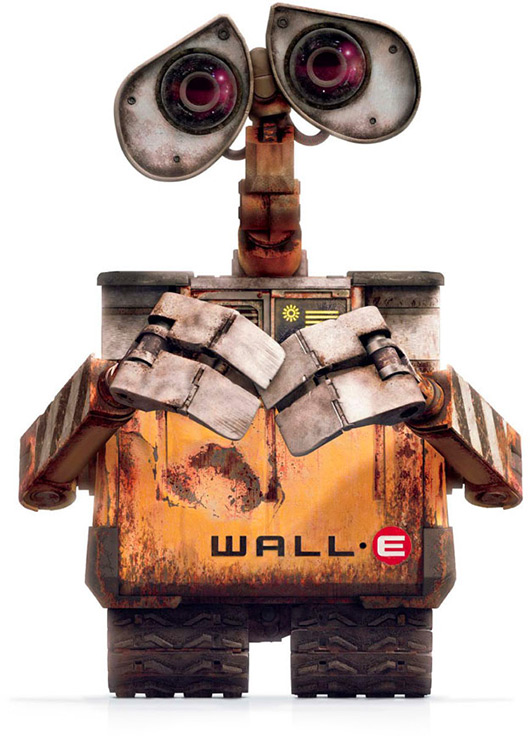
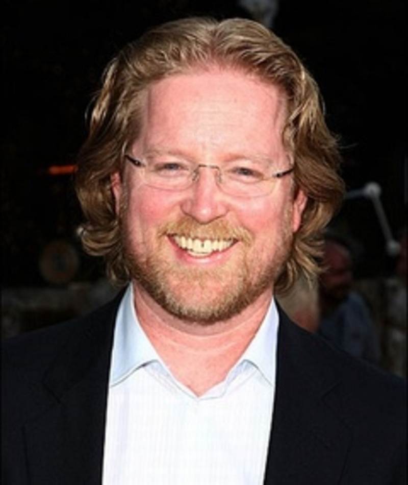
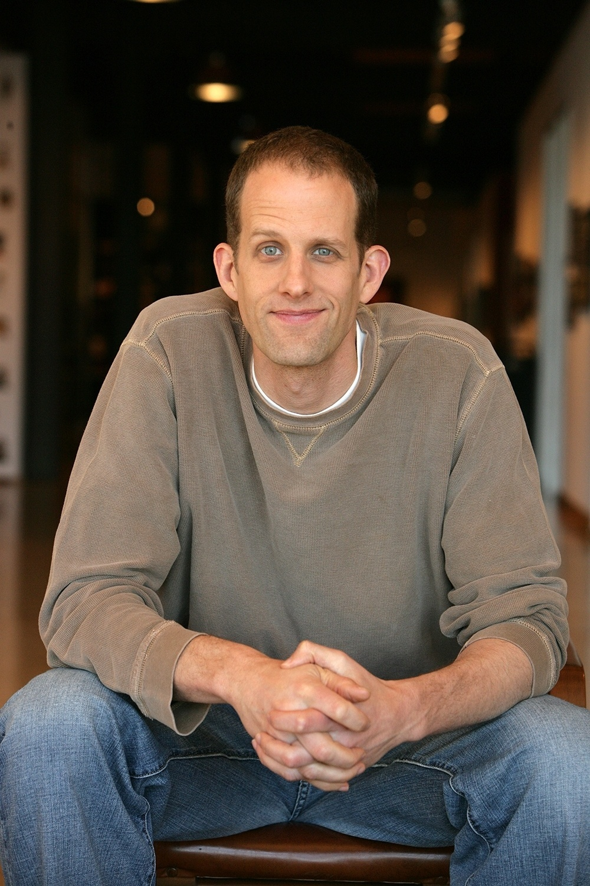
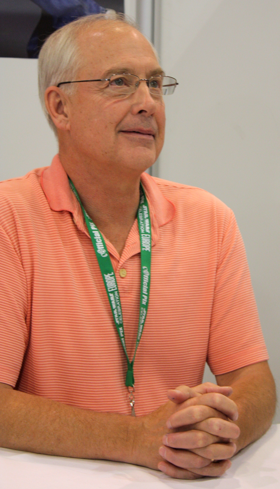
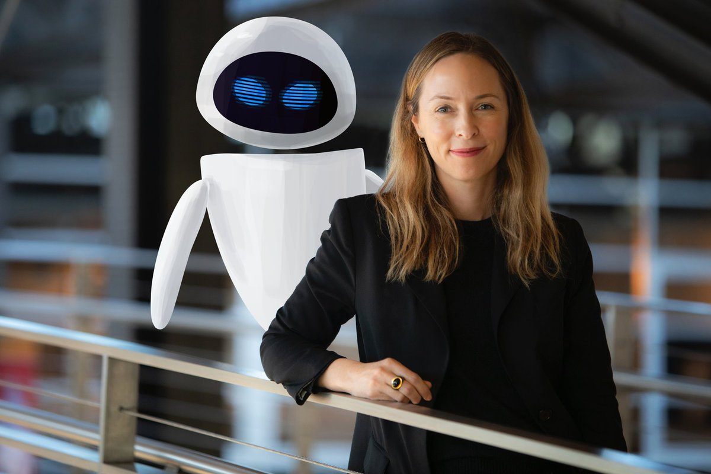
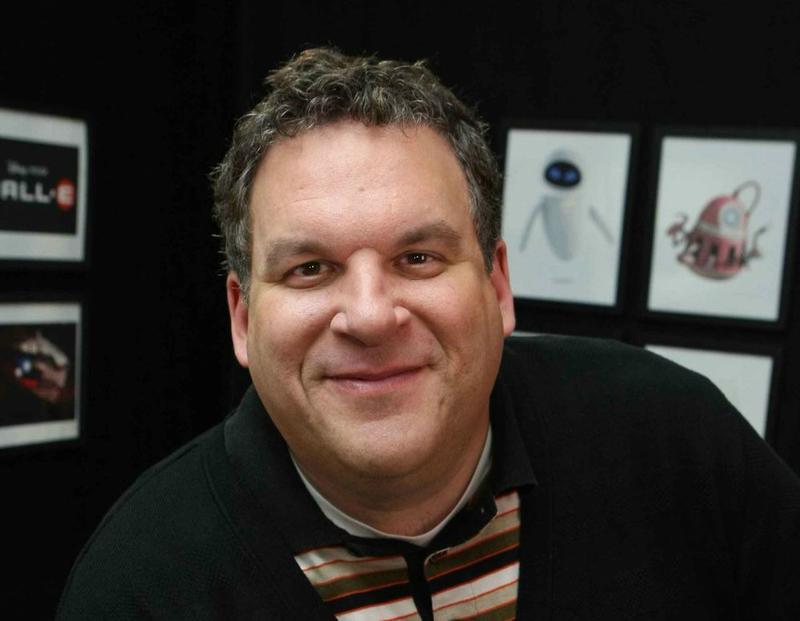
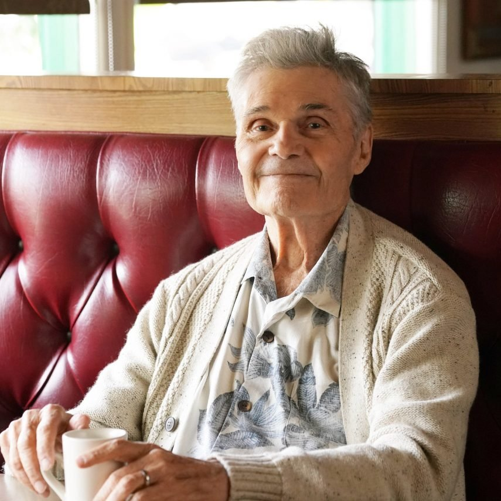
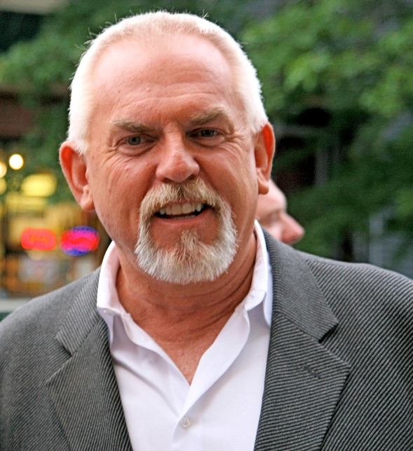
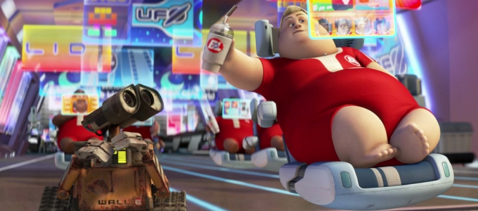
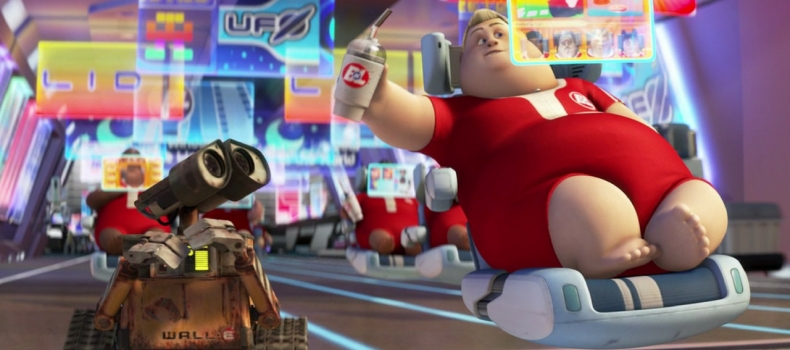

Wall-E por Bruna Tais Fischer
Sinopse
“Após entulhar a Terra de lixo e poluir a atmosfera com gases tóxicos, a humanidade deixou o planeta e passou a viver em uma gigantesca nave. O plano era que o retiro durasse alguns poucos anos, com robôs sendo deixados para limpar o planeta. WALL-E é o último destes robôs, e sua vida consiste em compactar o lixo existente no planeta. Até que um dia surge repentinamente uma nave, que traz um novo e moderno robô: Eva. A princípio curioso, WALL-E se apaixona e resolve segui-la por toda a galáxia.” Fonte: google
Ano de lançamento e gênero
O filme foi lançado no ano de 2008.
Nele podemos encontrar diversos gêneros como:
- animação
- infantil
- ficção científica
- comédia
- romance
- aventura
- comédia romântica
- fantasia
Elenco
Direção do Wall-E, Andrew Stanton
Andrew Christopher Stanton Jr. é um animador, roteirista, e ator de voz americano. Um de seus principais trabalhos aconteceu no período de 2002 a 2003, na animação Procurando Nemo da Pixar, o qual ele dirigiu e escreveu. Venceu o Óscar de Melhor Animação em 2004 e em 2008.
Roteiro do Wall-E, Pete Docter
Peter Hans Docter, mas conhecido como Pete Docter (Bloomington, 9 de outubro de 1968) é um cineasta, argumentista e produtor de cinema norte-americano. É mais conhecido pela direção no grande sucesso dos estúdios Pixar, Monsters, Inc.. Foi formado na escola John F. Kennedy, e tem ascendência dinamarquesa.
Ator/Atriz Original
Wall-E, Ben Burtt
Ben Burtt produziu a voz de WALL•E (Waste Allocation Load Lifter - Earth Class), o protagonista. WALL·E é um consciente robô de 700 anos de idade, e é presumidamente o único ainda em funcionamento na Terra. Ele é uma pequena caixa compactadora com esteiras para todo tipo de terreno, mãos com três dedos e olhos com binóculos. Ele é muito curioso, solitário e de bom coração, sempre se importando mais com os outros do que consigo mesmo. Ele coleciona objetos inúteis, como patinhos de borracha, cubos mágicos e troféus dourados. Ele também tem uma barata de estimação chamada Hal e ama música.Burtt também é creditado pela voz de M•O (Microbe Obliterator), como também a grande maioria dos outros robôs. M-O é um robô de manutenção pequeno e obsessivo compulsivo por limpeza. Encontrar WALL·E o coloca em sobrecarga quando ele percebe o quão sujo WALL·E é. M-O passa a maior parte do filme limpando a sujeira que WALL·E deixa para trás, porém no final ele ajuda WALL·E e EVA a colocar a planta no holo-detector.
Eva, Elissa Knight
Elissa Knight como EVA (Extraterrestrial Vegetation Evaluator), uma elegante sonda robô que é encarregada de localizar vegetação na Terra e verificar sua habitabilidade. Ela é branca, com um corpo em formato de ovo que pode levitar e olhos azuis de LED. EVA se move usando tecnologia antigravidade e é equipada com digitalizadores, compartimento para armazenamento de amostras e canhões de plasmas em seu braço. Ela é inicialmente uma robô fria que está apenas preocupada com sua missão, não demonstrando nenhuma emoção. Entretanto, ela aprende como demonstrar emoções ao interagir com WALL·E, como rir quando é divertida por suas travessuras.
Comandante McCrea, Jeff Garlin
Jeff Garlin como Comandante B. McCrea, o solitário comandante da Axiom. Suas tarefas como capitão são entediantes rotinas diárias. Encontrar WALL·E despertou seu interesse na Terra, ficando envolvido em uma pesquisa sobre seu planeta natal, pavimentando o caminho para ele retomar o controle da nave de seu piloto automático. Seu nome é conhecido através de um holograma comemorativo, junto com seus predecessores.
Shelby Forthright, Fred Willard
Fred Willard como Shelby Forthright, o diretor executivo histórico da Buy-n-Large Corporation. Constantemente otimista, Forthright propôs os planos de evacuação para limpar o planeta e recolonizá-lo posteriormente. Todavia, a corporação desistiu depois de perceber quão tóxica a Terra havia se tornado. Forthright é o único personagem real em qualquer filme da Pixar.
John, John Ratzenberger
John Ratzenberger e Kathy Najimy como John e Mary. Ambos vivem abordo da Axiom, não tendo conhecimento de seus arredores, mais notavelmente não percebendo que há uma piscina gigante na nave. Entretanto, eles são tirados de seus transes eletrônicos induzidos depois de encontros separados com WALL·E, eventualmente se encontrando cara a cara pela primeira vez.
Mary, Kathy Najimy
Mary estava olhando para as estrelas pelas janelas e viu WALL-E brincando com EVA. Só então, depois de ver, ela por engano empurrou sua cadeira flutuante para trás e correu para outro passageiro, John , que também viu WALL-E. Quando eles se viram, eles rapidamente se apaixonaram. Eles foram então vistos alegremente jogando água um no outro na piscina, contra a vontade de um salva-vidas robótico. Mary e John também resgataram muitos bebês enquanto AUTO virava o navio.
O que têm de ciência real
No filme vemos como a ciência o planeta sem vida humana, que é algo muito discutido nos dias de hoje, estamos destruindo nosso planeta e talvez um dia a cena que o filme retrata um dia poder ser real. No filme percebemos que a inteligência artificial ficou muito mais avançada que os próprios humanos, algo que não esta mais tão distânte de nós.
O que têm de ciência inventada
Quase todo o filme é composto por ciência inventada, a parte dos seres humanos estarem morando em uma nave no espaço, a parte de que eles reconstruiriam o planeta que estava destruido e sem nenhuma vida com apenas uma simples planta, a parte de um robô criar sentimentos, entre muitas outras, porque todas essas cenas são basicamente impossíveis para nós, nos hoje em dia.
Comentario pessoal
Eu amei muito o filme, porque mesmo ele sendo um filme de animação e mais voltado para crianças, ele trata de temas muito fortes .Ele faz uma ótima crítica em relação ao meio ambiente, que nós seres humanos exploramos com muita irresponsabilidade, sem pensar nos danos que estamos causando ao lugar aonde todos moramos e aonde próximas gerações iram habitar. Tambem adorei a forma que o filme retratou o amor, como algo para todos, seja você um animal, um ser humano ou até mesmo um robô, no filme vemos que o amor é algo tão louco que faz você fazer enormes sacrifios sem pensar duas vezes, mas é algo tão puro e tão bonito que no fim sempre acaba valendo a pena .
Algumas imagens do filme


 
